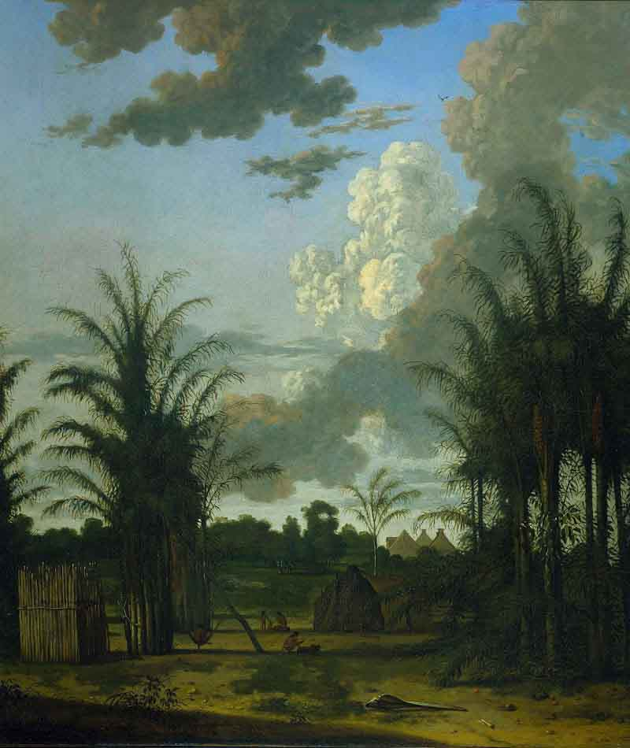
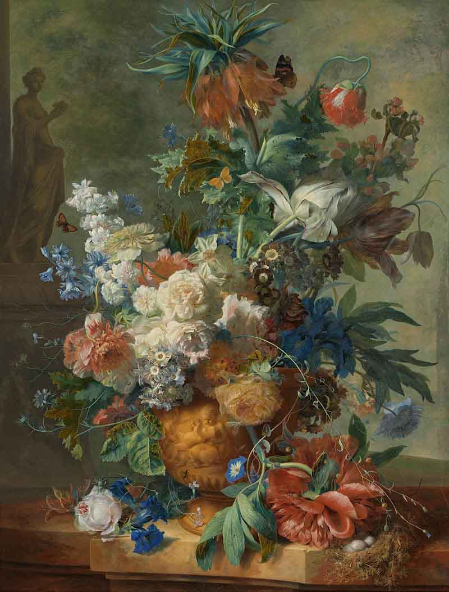

Openingstijden 09:00 tot 17:00 Maandag tot Zondag

Geschiedenis van het Rijksmuseum
Hoe het begon
Op 19 november 1798, besloot de regering naar Frans voorbeeld een nationaal museum op te richten. Een ‘prestigeproject’ om de liefde voor het land aan te wakkeren maar ook om belangrijke voorwerpen te bewaren. Op 31 mei 1800 opende deze Nationale Kunstgalerij voor het eerst zijn deuren in Huis Ten Bosch in Den Haag. Met ruim 200 schilderijen en historische voorwerpen, deels uit de stadhouderlijke collecties en deels uit (opgeheven) landelijke instellingen, zoals de VOC. De eerste aankoop, De Zwaan van Jan Asselijn, kostte 100 gulden en is nog steeds een van de topstukken van het Rijksmuseum.
Het Rijksmeseum
Met Willem I als nieuwe koning vanaf 1813, verhuisde het museum als 'Rijks Museum' samen met de uit Den Haag afkomstige nationale prentencollectie naar het Trippenhuis, een 17de-eeuws stadspaleis aan de Kloveniersburgwal. Tot ongenoegen van de directeur werden vervolgens allerlei andere collecties elders ondergebracht. Voorwerpen uit de klassieke oudheid gingen naar een nieuw Museum van Oudheden in Leiden en voorwerpen en kunstnijverheid werden aan het inmiddels in Den Haag opgerichte Kabinet van Zeldzaamheden toegewezen. In Haarlem kwam in 1838 in Paviljoen Welgelegen een apart museum voor moderne, 19de-eeuwse kunst. In tegenstelling tot in de Napoleontijd, kreeg het Rijks Museum weinig grote werken.
Colectie van het Rijksmeseum
klik afbeelding voor informatie

De bedreigde zwaan, Jan Asselijn, ca. 1650
×

Verhaal van het schilderij
Energiek verdedigt een zwaan haar nest tegen een hond. Het gevecht werd in latere eeuwen
politiek geduid:
de witte zwaan werd opgevat als de in 1672 vermoorde staatsman Johan de Witt,die het
land verdedigt tegen zijn vijanden.
Met die interpretatie kwam het schilderij in 1800 als eerste aankoop in de Nationale
Kunstgalerij
(de voorloper van het Rijksmuseum) terecht.
Jan Asselijn
Geboren in het 1600 ongeveer
Overleden in het jaar 1652
Hij was actief in het jaren 1632-1652
Geboorteland: Nederland
Caption one
klik afbeelding voor informatie

Meisje in witte kimono, George Hendrik Breitner, 1894
×

Verhaal van het schilderij
Geïnspireerd door Japanse prenten schilderde Breitner tussen 1893 en 1896 dertien
schilderijen van een meisje in kimono.
Zij heeft steeds een andere houding en de kimono verschilt van kleur.
De blikvanger hier is de geborduurde witzijden kimono met de rood afgezette mouwen en
oranjekleurige ceintuur.
Het dromerige meisje is de zestienjarige Geesje Kwak,
een naaister en een van Breitners vaste modellen.
George Hendrik Breitner
geboren in Rotterdam 12 september 1857
Overleden Amsterdam 5 juni 1923
Geboorteland: Nederland
klik afbeelding voor informatie

De Nachtwacht, Rembrandt van Rijn, 1642
×

Verhaal van het schilderij
Rembrandts beroemdste en grootste schilderij werd gemaakt voor de Kloveniersdoelen.
Dit was een van de drie hoofdkwartieren van de Amsterdamse schutterij,
de burgerwacht van de stad. Rembrandt was de eerste die op een schuttersstuk alle
figuren in actie weergaf.
De kapitein, in het zwart, geeft zijn luitenant opdracht dat de compagnie moet gaan
marcheren.
De schutters stellen zich op. Met behulp van licht vestigde Rembrandt de aandacht op
belangrijke details,
zoals het handgebaar van de kapitein en het kleine meisje op de voorgrond. Zij is de
mascotte van de schutters.
De naam Nachtwacht is pas veel later ontstaan, toen men dacht dat het om een nachtelijk
tafereel ging.
Rembrandt van Rijn
geboren in Harmenszoon van Rijn 15 july 1606
Overleden 4 October 1669
Caption Three
klik afbeelding voor informatie

Vuurgevecht aan de Vaartse Rijn bij Jutphaas, Jonas Zeuner, 1787 - 1788
×

Verhaal van het schilderij
In 1786 en 1787 woedde in de Republiek een burgeroorlog tussen prinsgezinden en
patriotten.
Het stadhouderlijke leger probeerde in mei 1787 de stad Utrecht, die in handen was van
patriotten,
te isoleren van het eveneens patriotse gewest Holland. Op 9 mei slaagden de patriotten
erin de aanval af te slaan.
Links zijn de stadhouderlijke troepen te zien, rechts de Utrechtse patriotten.
Jutphaas, Jonas Zeuner
Geboren 1727
Overleden 1814
Hij heeft ongeveer 170 schilderijen geschilderd
Caption four
klik afbeelding voor informatie

Schipbreuk op een rotsachtige kust, Wijnand Nuijen, ca. 1837
×

Verhaal van het schilderij
Dit schilderij is een hoogtepunt van de Nederlandse romantiek.
Het verbeeldt de nietigheid van de mens te midden van de natuur.
In een storm is een driemaster op de klippen gelopen en vergaan.
De bemanning zoekt radeloos het strand af naar overlevenden.
Zonnestralen doen een poging de donkere lucht te doorbreken en bieden zicht op de
overweldigende,
steile rotswanden, waardoor de mensen nog kleiner lijken.
Wijnand Nuijen
Geboren in Den Haag 4 maart 1813
Overleden in Den Haag 2 juni 1839
Geboorteland: Nederland
Caption five
klik afbeelding voor informatie

Landschap met waterval, Jacob Isaacksz van Ruisdael, ca. 1668
×

Jacob Isaacksz van Ruisdael
In dit grootse landschap met de machtige waterval gaan de kleine figuurtjes bijna geheel
verloren.
De knoestige bomen, de kale takken en het ruisende water beheersen het beeld.
Heel het drama van ontstaan en vergaan in de natuur wordt erin voelbaar.
Als een baken van rust steekt de kerktoren boven alles uit.
Jacob Isaacksz van Ruisdael
Geboren 1628 of 1629
Geboorteland: Nederland
Overleden 10 maart 1682
Caption five
klik afbeelding voor informatie

Plantage in Suriname, Dirk Valkenburg, 1707
×

Verhaal van het schilderij
De schilder Dirk Valkenburg verbleef enkele jaren in Suriname,
op de plantages van de Amsterdamse koopman Jonas Witsen.
In opdracht van Witsen schilderde hij dit tafereel van een sinaasappelplantage.
Tussen de palmen is de woning van de plantage-eigenaar te zien en op de voorgrond enkele
indianen,
de oorspronkelijke bewoners van dit gebied.
Dirk Valkenburg
Geboren Amsterdam 17 februari 1675
Overleden 2 februari 1721
Caption five
klik afbeelding voor informatie

Bosgezicht nabij Barbizon, Johan Hendrik Weissenbruch, 1900
×
Verhaal van het schilderij
De kunstenaarskolonie Barbizon lag bij het bos van Fontainebleau, ten zuidoosten van
Parijs.
De schilders van Barbizon waren van grote invloed op de Haagse School.
Daarom maakte Weissenbruch op zijn enige buitenlandse reis – hij was 76 jaar oud! – een
pelgrimstocht naar deze plek.
Hij schilderde het karakteristieke berkenbos,
met daarin een schilder die leunend tegen een rotsblok aan het schetsen is.
Johan Hendrik Weissenbruch
Geboren Den Haag 19 juni 1824
Overleden Den Haag 24 maart 1903
Geboorteland: Nederland
Caption five
klik afbeelding voor informatie

Stilleven met bloemen, Jan van Huysum, 1723
×

Verhaal van het schilderij
Van Huysum bracht het in de 18de eeuw zeer geliefde genre van het bloemstilleven tot
nieuwe hoogten.
In plaats van de gebruikelijke donkere achtergrond gebruikte hij een lichtgekleurde met
een parklandschap,
zodat het lijkt alsof de bloemen buiten op een balustrade staan. Hier bestaat het decor
uit een beeld van Flora,
godin van de bloemen, vluchtig geschilderde boomtakken en een vijver.
Jan van Huysum
Geboren in Amsterdam 15 april 1682
Overleden in Amsterdam 8 februari 1749
Geboorteland: Nederland
Caption five
klik afbeelding voor informatie

Portret van Lodewijk Napoleon, Charles Howard Hodges, 1809
×
Verhaal van het schilderij
In 1795 vielen Franse troepen Nederland binnen. Ons land werd een bondgenoot van de
Fransen,
maar met grote zelfstandigheid. Tot Napoleon in 1806 de macht overnam en zijn broer
Lodewijk Napoleon koning van Holland maakte.
Lodewijk toonde zich betrokken en kwam op voor de Nederlandse belangen.
Maar zó had Napoleon het niet bedoeld, en in 1810 dwong hij zijn broer tot een
troonsafstand.
Charles Howard Hodges
Geboren London 23 juli 1764
Overleden Amsterdam 24 juli 1837
Geboorteland Engeland
Caption five
❮
❯
De bedreigde zwaan, Jan Asselijn, ca. 1650
×
Verhaal van het schilderij
Energiek verdedigt een zwaan haar nest tegen een hond. Het gevecht werd in latere eeuwen politiek geduid: de witte zwaan werd opgevat als de in 1672 vermoorde staatsman Johan de Witt,die het land verdedigt tegen zijn vijanden. Met die interpretatie kwam het schilderij in 1800 als eerste aankoop in de Nationale Kunstgalerij (de voorloper van het Rijksmuseum) terecht.
Jan Asselijn
Geboren in het 1600 ongeveer
Overleden in het jaar 1652
Hij was actief in het jaren 1632-1652
Geboorteland: Nederland
Caption one
Meisje in witte kimono, George Hendrik Breitner, 1894
×
Verhaal van het schilderij
Geïnspireerd door Japanse prenten schilderde Breitner tussen 1893 en 1896 dertien schilderijen van een meisje in kimono. Zij heeft steeds een andere houding en de kimono verschilt van kleur. De blikvanger hier is de geborduurde witzijden kimono met de rood afgezette mouwen en oranjekleurige ceintuur. Het dromerige meisje is de zestienjarige Geesje Kwak, een naaister en een van Breitners vaste modellen.
George Hendrik Breitner
geboren in Rotterdam 12 september 1857
Overleden Amsterdam 5 juni 1923
Geboorteland: Nederland
De Nachtwacht, Rembrandt van Rijn, 1642
×
Verhaal van het schilderij
Rembrandts beroemdste en grootste schilderij werd gemaakt voor de Kloveniersdoelen. Dit was een van de drie hoofdkwartieren van de Amsterdamse schutterij, de burgerwacht van de stad. Rembrandt was de eerste die op een schuttersstuk alle figuren in actie weergaf. De kapitein, in het zwart, geeft zijn luitenant opdracht dat de compagnie moet gaan marcheren. De schutters stellen zich op. Met behulp van licht vestigde Rembrandt de aandacht op belangrijke details, zoals het handgebaar van de kapitein en het kleine meisje op de voorgrond. Zij is de mascotte van de schutters. De naam Nachtwacht is pas veel later ontstaan, toen men dacht dat het om een nachtelijk tafereel ging.
Rembrandt van Rijn
geboren in Harmenszoon van Rijn 15 july 1606
Overleden 4 October 1669
Caption Three
Vuurgevecht aan de Vaartse Rijn bij Jutphaas, Jonas Zeuner, 1787 - 1788
×
Verhaal van het schilderij
In 1786 en 1787 woedde in de Republiek een burgeroorlog tussen prinsgezinden en patriotten. Het stadhouderlijke leger probeerde in mei 1787 de stad Utrecht, die in handen was van patriotten, te isoleren van het eveneens patriotse gewest Holland. Op 9 mei slaagden de patriotten erin de aanval af te slaan. Links zijn de stadhouderlijke troepen te zien, rechts de Utrechtse patriotten.
Jutphaas, Jonas Zeuner
Geboren 1727
Overleden 1814
Hij heeft ongeveer 170 schilderijen geschilderd
Caption four
Schipbreuk op een rotsachtige kust, Wijnand Nuijen, ca. 1837
×
Verhaal van het schilderij
Dit schilderij is een hoogtepunt van de Nederlandse romantiek. Het verbeeldt de nietigheid van de mens te midden van de natuur. In een storm is een driemaster op de klippen gelopen en vergaan. De bemanning zoekt radeloos het strand af naar overlevenden. Zonnestralen doen een poging de donkere lucht te doorbreken en bieden zicht op de overweldigende, steile rotswanden, waardoor de mensen nog kleiner lijken.
Wijnand Nuijen
Geboren in Den Haag 4 maart 1813
Overleden in Den Haag 2 juni 1839
Geboorteland: Nederland
Caption five
Landschap met waterval, Jacob Isaacksz van Ruisdael, ca. 1668
×
Jacob Isaacksz van Ruisdael
In dit grootse landschap met de machtige waterval gaan de kleine figuurtjes bijna geheel verloren. De knoestige bomen, de kale takken en het ruisende water beheersen het beeld. Heel het drama van ontstaan en vergaan in de natuur wordt erin voelbaar. Als een baken van rust steekt de kerktoren boven alles uit.
Jacob Isaacksz van Ruisdael
Geboren 1628 of 1629
Geboorteland: Nederland
Overleden 10 maart 1682
Caption five
Plantage in Suriname, Dirk Valkenburg, 1707
×
Verhaal van het schilderij
De schilder Dirk Valkenburg verbleef enkele jaren in Suriname, op de plantages van de Amsterdamse koopman Jonas Witsen. In opdracht van Witsen schilderde hij dit tafereel van een sinaasappelplantage. Tussen de palmen is de woning van de plantage-eigenaar te zien en op de voorgrond enkele indianen, de oorspronkelijke bewoners van dit gebied.
Dirk Valkenburg
Geboren Amsterdam 17 februari 1675
Overleden 2 februari 1721
Caption five
Bosgezicht nabij Barbizon, Johan Hendrik Weissenbruch, 1900
×
Verhaal van het schilderij
De kunstenaarskolonie Barbizon lag bij het bos van Fontainebleau, ten zuidoosten van Parijs. De schilders van Barbizon waren van grote invloed op de Haagse School. Daarom maakte Weissenbruch op zijn enige buitenlandse reis – hij was 76 jaar oud! – een pelgrimstocht naar deze plek. Hij schilderde het karakteristieke berkenbos, met daarin een schilder die leunend tegen een rotsblok aan het schetsen is.
Johan Hendrik Weissenbruch
Geboren Den Haag 19 juni 1824
Overleden Den Haag 24 maart 1903
Geboorteland: Nederland
Caption five
Stilleven met bloemen, Jan van Huysum, 1723
×
Verhaal van het schilderij
Van Huysum bracht het in de 18de eeuw zeer geliefde genre van het bloemstilleven tot nieuwe hoogten. In plaats van de gebruikelijke donkere achtergrond gebruikte hij een lichtgekleurde met een parklandschap, zodat het lijkt alsof de bloemen buiten op een balustrade staan. Hier bestaat het decor uit een beeld van Flora, godin van de bloemen, vluchtig geschilderde boomtakken en een vijver.
Jan van Huysum
Geboren in Amsterdam 15 april 1682
Overleden in Amsterdam 8 februari 1749
Geboorteland: Nederland
Caption five
Portret van Lodewijk Napoleon, Charles Howard Hodges, 1809
×
Verhaal van het schilderij
In 1795 vielen Franse troepen Nederland binnen. Ons land werd een bondgenoot van de Fransen, maar met grote zelfstandigheid. Tot Napoleon in 1806 de macht overnam en zijn broer Lodewijk Napoleon koning van Holland maakte. Lodewijk toonde zich betrokken en kwam op voor de Nederlandse belangen. Maar zó had Napoleon het niet bedoeld, en in 1810 dwong hij zijn broer tot een troonsafstand.
Charles Howard Hodges
Geboren London 23 juli 1764
Overleden Amsterdam 24 juli 1837
Geboorteland Engeland
Caption five
Exhibition
Klik afbeelding voor informatie

Exhibition
×The story of the painting
Dankzij de uitstaande bruiklenen die mogelijk zijn gemaakt door Ammodo, kunnen Nederlandse en internationale tentoonstellingsbezoekers schilderijen, beeldhouwkunst en andere kunstschatten zelden of nooit eerder in Nederland getoond. Zo ondersteunt Ammodo niet alleen het Rijksmuseum maar ook de ontwikkeling van kunst en cultuur in het hele land.
The story of the painting
Rond 1500 begon de eerste echte bloei van het portret in Europa. Machtige keizers, flamboyante aristocraten en welgestelde burgers; steeds meer mensen lieten zich in de 15de en 16de eeuw vereeuwigen. Met meer dan 100 portretten toont deze tentoonstelling hoe die geportretteerden zich, uiteraard zo gunstig mogelijk, lieten afbeelden. Door middel van bruiklenen van musea uit heel Europa en de Verenigde Staten komen in de tentoonstelling internationale topstukken bijeen van beroemde kunstenaars als Holbein, Dürer, Memling en Titiaan. Een van de hoogtepunten is Petrus Christus’ Portret van een jonge vrouw (ca. 1470), dat voor het eerst in bijna dertig jaar door de Gemäldegalerie in Berlijn aan een museum wordt uitgeleend.
vergeet me niet